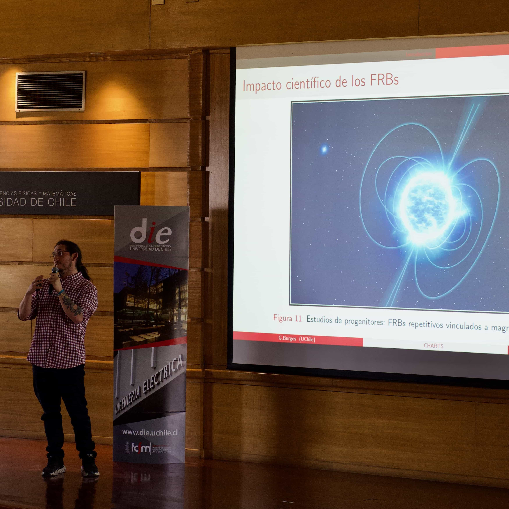
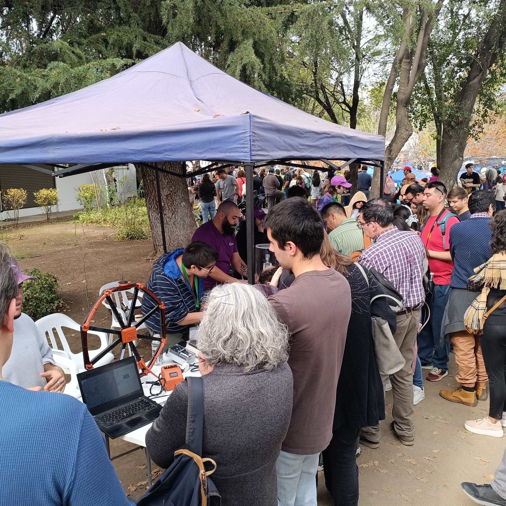

Divulgación científica
Nuestro grupo realiza actividades de divulgación científica 🎙️. Estamos comprometidos en llevar la astronomía al público general, y siempre estamos en búsqueda de nuevas formas de comunicarnos con ustedes. Si tienes alguna idea o actvidades en las que nuestro grupo puede interactuar en actividades de divulgación contáctanos.

Evento de divulgación de Astrolab 2025. En agosto de 2025, AstroLab organizó un evento de divulgación en el que los miembros del equipo dieron una charla de una hora sobre nuestros proyectos de investigación en curso (en la Facultad Ciencias Físicas Matemáticas, Universidad de Chile). Estudiantes de AstroLab mostraron su trabajo a sus pares, en un ambiente de discusiones y preguntas. La sesión destacó el diálogo abierto y amistoso sobre nuestras investigaciones y las trayectorias profesionales en astronomía e instrumentación. ¡Estén atentos a los anuncios de próximos eventos de divulgación! La fotografía muestra a nuestro integrante MSc. Gonzalo Burgos mientras discutía el cielo radio transitorio.

Día del patrimonio 2025. Este pasado día del patrimonio (Mayo 25, 2025) estuvimos en Observatorio Astronómico Nacional (Cerro Calán), Departamento de Astronomía de la Universidad de Chile. Aquí nuestro equipo de AstroLab junto a Center for Astrophysics and Associated Technologies (CATA), mostró a público general los distintos desarrollos de hardware en los hemos trabajado durante los pasados dos años. Estos trabajos incluyen desarrollos en radio frecuencias del proyecto Canadian-Chilean array for radio transient studies (CHARTS), como también nuestro último trabajo en terreno en Gemini Sur (instalando y observando con el Italian quantum eye; IQUEYE). Los componentes de CHARTS corresponden a componentes de amplificación de radio frecuencias, filtros y multiplexores, fundamentales para poder detectar de forma eficiente fuentes de radio efímeras. En el caso de IQUEYE nuestro equipo dió a conocer el proceso de instalación y de observaciones astronómicas que sucedieron este pasado mes de Febrero en Gemini Sur.